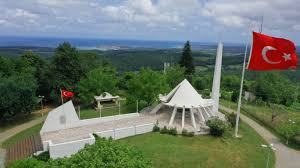
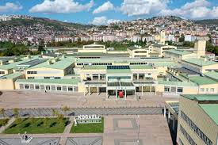
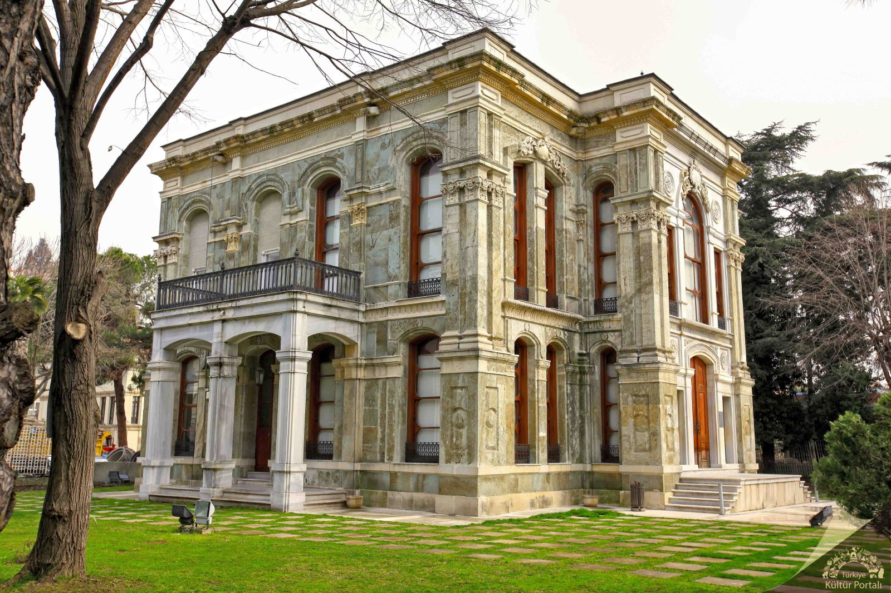
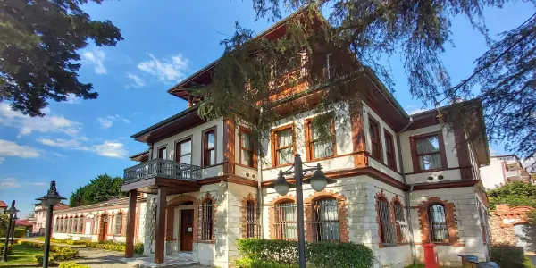

Kültürel Mirasımız
Şehrimizin tarihine ve geleceğine ışık tutan önemli yapılar.

Akçakoca Anıtı
Kocaeli fatihi Akçakoca Bey anısına Kandıra'da inşa edilen bu anıt, şehrin simgelerinden biridir.

Bilim Merkezi
Eski Seka Kağıt Fabrikası'nın dönüştürülmesiyle kurulan merkez, Türkiye'nin en büyük endüstriyel dönüşüm projelerindendir.

Kasr-ı Hümayun
Sultan Abdülaziz'in av köşkü olarak yaptırdığı, Avrupa barok üslubundaki tek küçük saray örneğidir.

Selim Sırrı Paşa Konağı
İzmit'in en görkemli sivil mimari örneği olan konak, zengin kalem işi süslemeleriyle dikkat çeker.